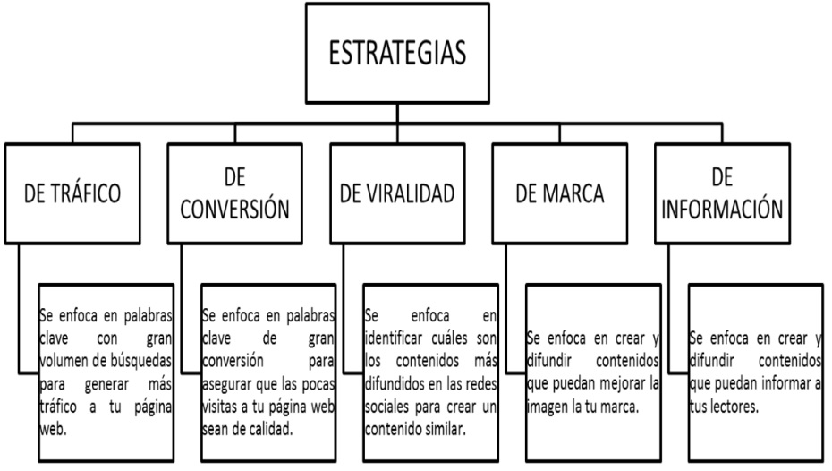

contenido digital
en cualquier forma de contenido multimedia, informacion o datos creados, distribuidos y consumidos en forma digital: vigencia, ocurrencia, identidad, compocision, utilidad
tipos de contenidos digitales
| contenido digital | definicion |
|---|---|
| blog | ideal para ayudar a llegar al nicho especifico, creando contenido que resuelva sus problemas. tambien funciona como una herramienta |
| newsletter | el email se ha vuelto una forma directa de estar en contacto constante con el nicho, ofreciendoles novedades interesantes de la marca |
| eBooks | permitira ofrecer al lector un contenido mas extenso, incorporando otros elementos creativos e infografias para sustentar la informacion |
| videos | son herramientas utiles para mostrar de forma muy explicita como funciona un producto o servicio |
| imagenes | son un contenido digital de caracter visual que permite mejorar la experiencia de los lectores, mostrandoles un contenido mas atractivo |
| infografias | son un contenido que hara una pagina web mas atractiva. Ademas, resultan interesantes para compartir en redes sociales |
| podcast | es un tipo de contenido que puede incrementar tiempo de estancia de los lectores en un sitio web |
| glosarios, FAQ, y diccionario | suele ser muy util para responder las dudas mas frecuentes de los usuarios. especialmente porque ayudan a la coa la comprension de un tema muy tecnico |
| webinar | este tipo de contenido ayuda en el posicionamiento de un proyecto en paginas web educativas |
consejos
- escribir para una audencia especifica
- realizar un analizis de contenido
- reltar historias reales
- hacer uso de toda la informacion
- compartir uso util
- crear contenido entretenido
- autocrear los contenido
- conocer el perfil del desinario ideal
- elegir el tema que se quiere tratar
- determinar el texto de contenido quie quiere crear
- definir estrategia de contenido.
- crear el conteido
- monitoriar
- optimizar contenido
- tener acceso a una gran cantidad de informacion a traves de multiples formatos como video, texto, fotografia
- tener acceso a otro tipo dedatos como la geolocalizaccion, ubicacion o el tiempo de respuesta de una encuesta online,
- obtener los datos en tiempo real para poder hacer un analisis efectivo. puedes hacer la investigacion desde cualquier lugar, y a cualquier hora
- los participantes se sienten mas comodos al dar su retroalimentacion pues no siente presion del observador.
- elegir el tema a investigar
- elegir el alcance y la hipotesis de investigacion
- diseñar las preguntas que se haran
- seleccionar un moredador
- reclutar a los participantes
- diseño del focus group
- organizar
- estatica:no son interactivas, son documentales y se programan en lenguaje html
- dinamica: son interactivas, satisfacen los requerimientos de el usuario y se programan en lenguaje php

tecnicas y metodos de investigacion digital
etnografia virtual
se refiere a un enfoque d investigacion etnografia que se lleva acabo en el entorno online. Es una metodologia de investigacion cualitativa e interpretativa que adapta las tecnicas tradicionales de investigacion etnografica en persona de la antropologia el estudio de las culturas y comunidades en linea formadas a traves de las comunicaciones medianas por una computadora o dispositivo movil
ventajas
analisis de redes sociales (ARS)
es una herramienta de medicion y analisis de las estructuras sociales que emergen de las relaciones entre actores sociales diversos, y y que utiliza la asucion basica que la explicacion de los fenomenos sociales que mejora analizando las relaciones entre actores. para las empresas el analisis de las redes sociales es la capacidad de recopilar y encontrar significado en los datos recopilados de los canales sociales para respaldar las decisiones comerciales y medir el desempeño de las acciones en funcion de esas decisiones comerciales y medir el desempeño de las acciones en funcion de esas decisiones a travez de las redes sociales.
focus grup.
es un metodo de investigacion que se basa en reunir a un pequeño grupo de personas para responder preguntas en un entorno controlado. el grupo se elige en funcion de rasgos demograficos predefinidos y las preguntas estan diseñadas para alejar luz sobre el tema.
pasos para creaer un focus group.
paginas web
es un documento digital de caracter multimediatico aadaptado a los estandares de la world wide web y a la que se puede acceder a travez de navegador web y una conexion activa a internet.
tipos de paginas web
URL.
es una cadena que proporciona la direccion de internet de un sitio web o recursos de world wide web, junto con el protocolo mediante el cual se tiene acceso al sitio o al recurso.
hosting.
es un espacio de disco dende se almacens las paginas web para que sean accesibles a travez de internet.